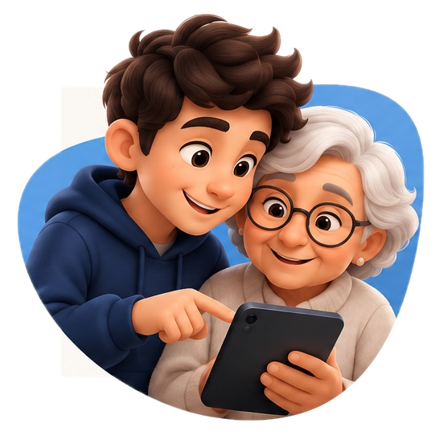
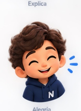
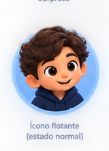
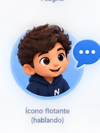
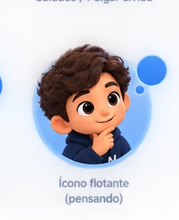
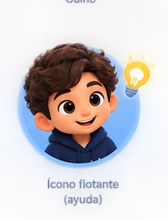
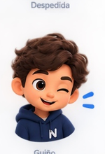

Te muestra por dónde empezar
Cuando no sabés qué tocar o cómo seguir, NIETO puede orientarte con pasos simples y un lenguaje fácil.
Tunieto digital te explica paso a paso, con paciencia y sin seguro. para que uses tu celular con mas confianza a tu ritmo.

Para adultos mayores de 65 a 99 años. NIETO transforma la ayuda digital en una experiencia más humana: amigable, paciente y visualmente clara.
Cuando no sabés qué tocar o cómo seguir, NIETO puede orientarte con pasos simples y un lenguaje fácil.
No apura, no complica y no da por sentado que ya sabés. Acompaña con empatía y claridad.

La meta no es hacer todo por vos. La meta es que te sientas más seguro usando tu propio celular.
Pensado para que cualquier persona mayor pueda entenderlo rápido, sin una interfaz confusa ni pasos innecesarios.
Mandar un mensaje, hacer una videollamada, encontrar una foto o entender una aplicación nueva.
Con una presencia amigable y clara, te va guiando para que entiendas lo que está pasando y qué conviene hacer.
Cada interacción está pensada para que uses el celular con más confianza, menos miedo y mayor autonomía.
El personaje no es un adorno: es parte de la experiencia. Hace que la ayuda se sienta menos fría y más humana.

DisponibleSiempre cerca
EscuchaListo para ayudar
PiensaBusca la mejor guía
ResuelveDa una respuesta claraNIETO también habla con la familia. La propuesta de valor no es solo tecnológica: es emocional. Ayuda a reducir frustración y a aumentar independencia.

“Una pequeña ayuda puede devolver mucha autonomía.”Para muchos adultos mayores, el problema no es la falta de interés: es que nadie les explica con calma. NIETO propone una experiencia más cercana, respetuosa y fácil de adoptar.
También es una herramienta valiosa para familias que quieren que sus seres queridos se sientan acompañados cuando usan el celular, sin depender siempre de otra persona.
Quiero enterarme del lanzamientoEstamos construyendo una experiencia cálida y simple para acompañar a adultos mayores con la tecnología. Si querés conocer el proyecto o sumarte cuando esté listo, podés dejar tu interés acá.
Estoy acá para ayudarte con paciencia, paso a paso y siempre a tu lado.